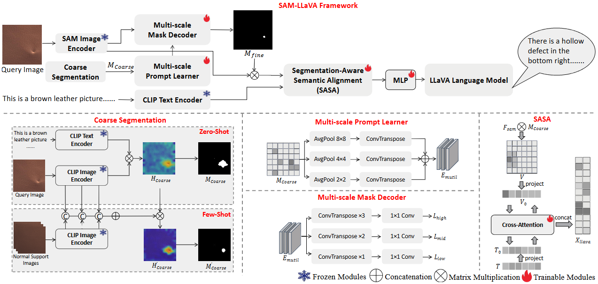
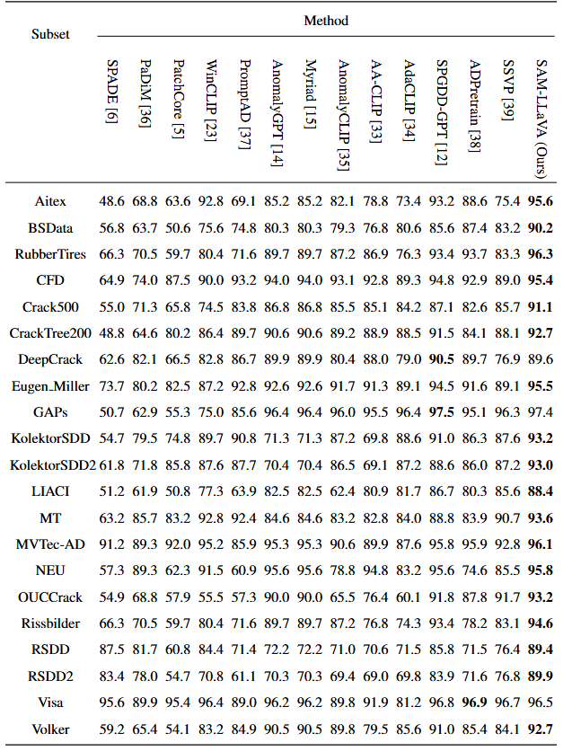
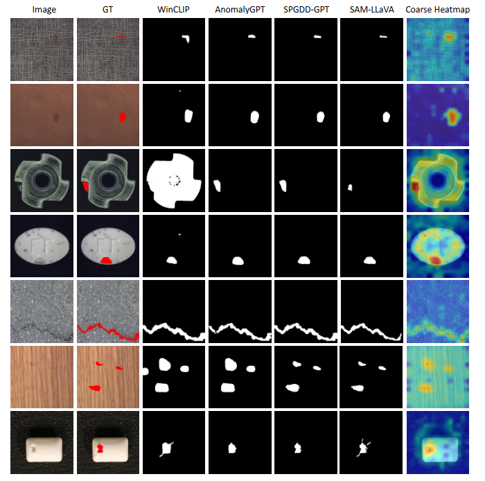
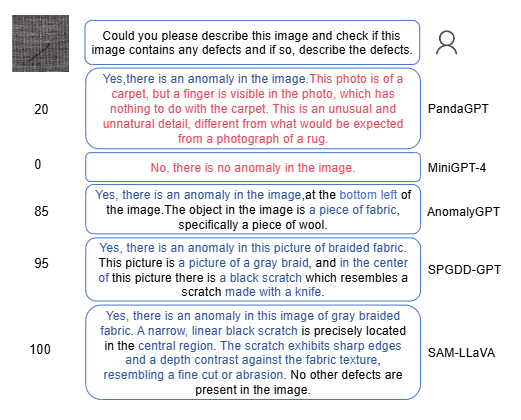
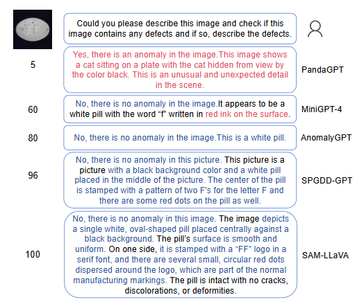

SAM-LLaVA: A Segmentation-Aware Vision-Language Framework for Industrial Defect Diagnosis
|
 |
The architecture of the proposed SAM-LLaVA.
Abstract
Large Vision-Language Models (LVLMs) have demonstrated potential in industrial defect diagnosis. However, their reliance on patch-level similarity computation and generic textual priors limits their capability for fine-grained defect localization and semantic alignment, often resulting in imprecise detection and hallucinated descriptions. Existing methods typically adopt a “one-class-one-model” paradigm or use global feature matching, which limits their adaptability to novel defects and precise defect description. To address these issues, we propose SAM-LLaVA, a segmentation-aware vision-language framework for zero-shot and few-shot industrial defect diagnosis. Our method introduces three key innovations: (1) a CLIP-SAM cascade prompting mechanism that leverages CLIP’s zero-shot generalization for coarse localization and guides Segment Anything Model (SAM) for pixel-precise segmentation; (2) a multi-scale prompt learner and mask decoder that enhances adaptability to defects of varying sizes; and (3) a Segmentation-Aware Semantic Alignment (SASA) module that establishes bidirectional cross-modal alignment between segmentation masks and textual embeddings, reducing hallucination and improving description consistency. Extensive experiments on MVTec-AD, VisA, and our Text-Augmented Defect Data Set (TADD) demonstrate that SAM-LLaVA achieves state-of-the-art performance in both defect detection and textual description under zero-shot and few-shot settings. Ablation studies confirm the contribution of each component, highlighting the effectiveness of our integrated coarse-to-fine and segmentation-aware design.
Links

Experimental Results
|
 |
Quantitative Results on TADD data sets.
|
 |
Visual comparison of segmentation results across different methods.
|
 |
 |
Citation